Platform as a Service (PaaS)
General features
Auto Scaling & Scaling-to-Zero
The PaaS services described in this document are designed to run on orchestrated, cloud-native platforms where horizontal auto scaling is a native capability. Auto scaling dynamically adjusts the number of active instances in response to application load so that services can absorb traffic peaks while avoiding unnecessary over‑provisioning during off‑peak periods.
At the platform level, an Horizontal Pod Autoscaler (HPA) or analogous controller continuously observes key metrics exposed by the workloads and the underlying infrastructure. These metrics commonly include CPU utilization, memory consumption, request rate, queue or backlog depth, and custom application indicators exported through standard monitoring interfaces. When the measured values exceed or fall below configured thresholds, the controller increases or decreases the replica count within the minimum and maximum limits defined for each service.
The same mechanism applies to many PaaS building blocks beyond purely stateless functions. These components can be configured to scale out when demand increases, distributing traffic across additional instances, and to scale in when demand subsides, consolidating activity on fewer instances. This behavior reduces the need for manual capacity planning, while still allowing organizations to define guardrails such as per‑tenant quotas, reserved capacity, or upper bounds imposed by licensing and compliance requirements.
For suitable workloads, several PaaS services also support scaling‑to‑zero. When a workload becomes idle and there are no active requests or tasks to process, the orchestration layer can progressively drain and stop all runtime instances associated with that service, leaving only the control and configuration plane active. In this state, compute capacity is released instead of being reserved for an idle service, which reduces the operational surface exposed to potential threats and improves infrastructure utilization. When new load arrives after a scale‑to‑zero phase, the platform automatically recreates the necessary runtime instances and starts routing work to them as soon as they become healthy; this can introduce a controlled start‑up latency, which can be mitigated for latency‑sensitive services by configuring a small minimum number of always‑on instances.
Scaling‑to‑zero applies to workloads whose runtime instances can be stopped while still meeting durability and availability requirements. State‑heavy services such as relational databases, message brokers, and some analytics engines typically maintain at least one active replica or a minimal cluster footprint to guarantee durability, failover, and predictable performance characteristics. For these services, elasticity is achieved through controlled horizontal scaling of nodes, vertical tuning of resource allocations, and scheduled maintenance windows, with the serving tier remaining continuously available.
In all scenarios, auto scaling integrates with the platform’s monitoring, logging, and governance capabilities. Scaling events are traceable, auditable, and can be correlated with business and security metrics to validate that capacity changes remain compliant with corporate policies.
Security Patching & Vulnerability Management
Overview
Security Patching is a core activity of the Vulnerability Management (VM) process, focused on identifying, assessing, and remediating security vulnerabilities affecting operating systems, applications, firmware, and infrastructure components.
The service helps organizations maintain a secure and compliant environment by applying security updates, reducing exposure to cyber threats, and improving overall system resilience.
| ADVANTAGE | DESCRIPTION |
|---|---|
| Reduced security risks | Mitigates vulnerabilities that could be exploited by attackers, reducing exposure to malware, ransomware, and unauthorized access. |
| Improved system reliability | Enhances the stability and resilience of operating systems, applications, and infrastructure components. |
| Regulatory compliance | Supports adherence to security standards, corporate policies, and compliance requirements. |
| Proactive threat mitigation | Identifies and addresses vulnerabilities before they can be exploited by emerging threats. |
| Continuous security improvement | Validates remediation actions and continuously improves the organization's security posture. |
Vulnerability management scope
The Vulnerability management process is designed to:
- Identify and assess security vulnerabilities.
- Verify compliance with security standards and internal policies.
- Evaluate the resilience of systems, networks, and applications.
- Validate the effectiveness of remediation activities.
- Continuously improve the security posture of managed environments.
Vulnerability management lifecycle:
Planning
↓
Execution of activities
↓
Remediation plan definition
↓
Remediation implementation
↓
Monitoring & validation
Patch Management Approaches
| TYPE | DESCRIPTION |
|---|---|
| Periodic vulnerability management | Scheduled assessments and patching activities performed according to predefined maintenance windows. |
| On-demand vulnerability management | Activities triggered by risk assessments, security alerts, newly discovered vulnerabilities, emergency patches, or zero-day threats. |
Roles and Responsibilities
The SOC coordinates and governs the Vulnerability Management process by:
- Defining the VM scope.
- Supporting activity planning.
- Managing internal and external security alerts.
- Reviewing assessment results.
- Validating remediation plans.
The SOC also performs:
- Collecting vulnerability intelligence from internal and external sources.
- Analyzing affected assets and systems.
- Planning security assessments and testing activities.
- Performing Vulnerability Assessments (VA) and Penetration Testing (PT).
- Producing reports and tracking remediation activities.
Kubernetes security and StackRox integration
For Kubernetes-based PaaS services, Vulnerability Management and Security Patching activities leverage StackRox, a cloud-native security platform providing continuous security monitoring and vulnerability assessment.
| FEATURE | DESCRIPTION |
|---|---|
| Vulnerability management | Identifies, prioritizes, and monitors vulnerabilities across container images and running workloads. |
| Network segmentation | Validates and enforces network segmentation policies to reduce lateral movement risks. |
| Compliance monitoring | Continuously evaluates workloads against security and compliance requirements. |
| Detection and response | Detects security threats and supports remediation activities through continuous monitoring and alerting. |
Replication
The protection of data integrity and availability within the PaaS platform is ensured through the integration of the Kubernetes cluster with a centralized backup service based on Veeam Backup & Recovery.
To support Kubernetes environments, the Veeam architecture includes a dedicated Media Agent responsible for executing backup operations through APIs exposed by the Kubernetes infrastructure.
The following table summarizes the Kubernetes objects protected by the backup service:
| COMPONENT | DESCRIPTION |
|---|---|
| Etcd Database | Distributed database hosted on Kubernetes master nodes, responsible for storing cluster state and configuration data. |
| Persistent volumes | Block and File Storage volumes provided by the Ceph platform and used by containerized workloads. |
Due to the critical role of the etcd database, which manages and stores the state and configuration of all Kubernetes objects, backup operations are performed at a very high frequency, typically several times per hour.
For stateful applications requiring Application-consistent backups (for example PostgreSQL databases), the backup process can leverage dedicated pre-backup and post-backup scripts.
During backup execution, the workflow follows these steps:
Application Quiesce (Read-Only)
↓
Volume Snapshot Creation
↓
Application Unquiesce (Read-Write)
These scripts temporarily place the application in a read-only state during snapshot creation and automatically restore normal operations once the backup process has been completed.
The Veeam platform supports the configuration and execution of these pre/post-backup scripts on a per-application basis, ensuring consistent and reliable backup operations for business-critical workloads.
Disaster Recovery
The PaaS platform leverages the multi-region, multi-availability-zone infrastructure of Leonardo Cloud Everywhere to support disaster recovery strategies at both the infrastructure and application level.
The underlying architecture is organized into three geographically distributed Regions, each composed of three Availability Zones hosted in physically separate Data Centers. Within a Region, the Availability Zones are interconnected through a dedicated high-throughput, low-latency backbone that supports synchronous data replication across the tri-site storage configuration. Across Regions, asynchronous replication is available over dedicated interregional backbones, enabling recovery scenarios while maintaining data sovereignty within Italian territory.
List of services
The following table lists the services included in the Platform as a Service (PaaS) category.
| FAMILY | SERVICES |
|---|---|
| Security | • Identity & Access Management (IAM) Service • Key Vault as a Service - Standard • Endpoint Protection • NGFW Platform |
| Middleware | • PaaS API Management • Functions As A Service (FAAS) |
| Infra & Ops Platform | • IT Infrastructure Service Operations (Logging & Monitoring) |
| DevSecOps | • DevSecOps As A Service • Qualizer DevSecOps |
| Big Data | • Data Lake • Data Platform • Business Intelligence Platform • Event Message |
| Artificial Intelligence (AI) | • AI Platform |
| Database | • PaaS SQL - PostgreSQL • PaaS In Memory - Redis |
| Networking | • PaaS Domain Name System (DNS) |
Security Family
Below is the list of services belonging to the Security family:
- Identity & Access Management Service
- Key Vault as a Service - Standard
- End point protection
- NGFW Platform
Identity & Access Management (IAM) Service

Service Description
The Identity & Access Management (IAM) service, developed by Leonardo, provides centralized authentication, authorization, and identity lifecycle management across the PaaS platform.
The service provides secure and centralized access management through Single Sign-On (SSO), Multi-Factor Authentication (MFA), and fine-grained authorization policies. It integrates with enterprise identity systems and external directories, enabling identity federation and centralized user lifecycle management.
Through a unified Single Pane of Glass, administrators can manage user identities, roles, authorization policies, authentication requirements, sessions, tokens, and directory integrations from a single console. Security and governance policies are consistently enforced across all PaaS services, providing a streamlined, secure, and cloud-native identity management experience.
The service is offered with the following unit metric: 100 concurrent users.
Features and Advantages
The following table summarizes the key features of the service:
| CAPABILITY AREA | DESCRIPTION |
|---|---|
| Identity Management | • User Management: creation, modification, and deletion of users; management of user profiles (name, email, custom attributes, roles, etc.); import/export of users from external directories such as LDAP and Active Directory. • Identity Federation: integration with external identity providers through LDAP and Active Directory, with support for one-way or two-way synchronization of users and roles. • Account Management UI: self-service portal that allows users to manage profiles, passwords, devices, active sessions, and permissions. |
| Access Management | • Single Sign-On (SSO) and Single Logout (SLO). • Multi-Factor Authentication (MFA). • Delegated Authentication (Identity Brokering). • Role-Based Access Control (RBAC) and policy enforcement. |
| Protocols & Integration | • Support for industry-standard protocols, including OpenID Connect (OIDC), OAuth 2.0, and SAML 2.0. Integration with API Gateways, microservices, and web frontend applications. |
| Security & Management | • Session and token management. • Password policy enforcement. • Event logging and auditing capabilities. • Scalability and High Availability through a distributed architecture with clustering and replication support. |
| Extensibility | • REST APIs for automated management of users, roles, and clients. • Service Provider Interfaces (SPI) for extending authentication, validation, and provisioning capabilities. • Support for custom authenticators and integration with external systems. |
The service offers the following advantages:
| ADVANTAGE | DESCRIPTION |
|---|---|
| Improved overall security | Centralized authentication and identity management reduce the attack surface and minimize the risk of security vulnerabilities being implemented inconsistently across applications. |
| Reduced maintenance and development costs | A single, centralized identity platform eliminates duplication of authentication and authorization logic, reducing development effort, operational complexity, and maintenance costs. |
| Agility and scalability | Accelerates the onboarding of new applications and services through the adoption of standard identity protocols such as OpenID Connect (OIDC), OAuth 2.0, and SAML 2.0, enabling rapid integration at scale. |
| Maintainability and standardization | Adoption of industry-standard protocols (OIDC, OAuth 2.0, and SAML 2.0) eliminates proprietary implementations, improves interoperability, and simplifies long-term maintenance. |
Key Vault as a Service - Standard

Service Description
The service, based on Hashicorp Vault technology, provides a secure cloud repository (Vault) for storing and managing credentials and passwords used by cloud applications without having to manually install and manage dedicated IaaS machines.
The service consists of a software platform that enables centralized and automated management of encryption keys, secrets, and certificates, with access controlled by identity-based authentication and authorization methods.
It also allows organizations to significantly simplify key lifecycle management, ensuring centralized control while leveraging the native cryptographic capabilities of KMS providers.
The service is offered with the following unit metric: 500 clients.
Features and Advantages
The following table summarizes the key features of the service:
| FEATURE | DESCRIPTION |
|---|---|
| Secure secret storage | Key/value secrets are stored in encrypted form within Key Vault As A Service, ensuring confidentiality and integrity even in the event of unauthorized access to the underlying storage layer. |
| Dynamic secrets | Key Vault As A Service can generate secrets on demand, enabling users and applications to securely access external systems without relying on long-lived credentials. |
| Data encryption | Key Vault As A Service provides encryption and decryption capabilities for workloads running on customer infrastructure, managing the complete lifecycle of the cryptographic material used during the encryption process. |
| Leasing and renewal | Each key or secret is associated with a lease that enables automatic revocation upon expiration. Clients can renew leases through the platform’s integrated APIs to maintain authorized access. |
| Revocation | Integrated support for revoking keys and secrets individually or in bulk (e.g., all secrets associated with a specific user), enabling rapid response in the event of credential compromise or security incidents. |
The service offers high availability and geographic replication.
The main workflow of Key Vault as a Service consists of four phases, as described in the following table:
| PHASE | DESCRIPTION |
|---|---|
| Authentication | The process by which a client provides information that Key Vault as a Service uses to verify the authenticity of the requester. Once authenticated, the system generates a token associated with the applicable security policy. |
| Validation | Identity validation is performed through trusted third-party providers such as Active Directory, LDAP, and Okta. |
| Authorization | The authenticated client is associated with a Key Vault as a Service security policy, consisting of a set of rules that define which API endpoints a user, machine, or application is allowed or denied access to through its token. |
| Access | Once authentication and authorization have been completed, Key Vault as a Service grants access to cryptographic keys, encryption capabilities, secrets, and certificates. |
The service offers the following advantages:
| ADVANTAGE | DESCRIPTION |
|---|---|
| Risk reduction | Automatic key rotation and secret lifecycle management enhance the protection of sensitive data, simplify regulatory compliance, and reduce the risk of human errors associated with manual credential management. |
| Operational efficiency and cost reduction | Automation, standardization, and centralized secret management reduce operational overhead, improve scalability, and eliminate the need for dedicated hardware investments. |
| Optimized Time-to-Market | Developers can focus on application development rather than key and secret management, enabling faster delivery of secure applications and accelerating innovation. |
| Improved trust and reputation | Auditing and traceability capabilities provide visibility into secret management activities, helping organizations demonstrate security controls and compliance to customers, partners, and stakeholders. |
| Cryptographic and standards compliance | Support for FIPS (Federal Information Processing Standards) validated cryptographic modules ensures that encryption, digital signing, HMAC, and key derivation operations comply with recognized security standards and regulatory requirements. |
Endpoint Protection Service

Service Description
Powered by Wazuh technology, the Endpoint Security Monitoring Service provides centralized security monitoring, threat detection, vulnerability assessment, and compliance monitoring for endpoint devices, servers, and workloads.
The service delivers a cloud-based, scalable, and centrally managed security monitoring platform capable of collecting, correlating, and analyzing security events from distributed endpoints. By combining host-based intrusion detection, file integrity monitoring, vulnerability detection, and log analysis, the service enhances visibility across the organization's infrastructure and enables proactive identification of security risks.
The service is delivered as a managed PaaS solution, offering continuous security monitoring, centralized visibility, and simplified administration for organizations seeking advanced endpoint security monitoring capabilities without the overhead of managing on-premises security infrastructures.
The service is offered with the following unit metric: 100 monitored endpoints.
Features and Advantages
The Endpoint Security Monitoring Service offers a comprehensive suite of integrated security functions aimed at ensuring endpoint visibility, compliance, and threat detection across the organization:
| FEATURE | DESCRIPTION |
|---|---|
| Security event collection and log analysis | Centralized collection, normalization, and analysis of security events, system logs, application logs, and audit records from monitored endpoints. |
| Host-Based Intrusion Detection (HIDS) | Continuous monitoring of endpoints to detect suspicious activities, unauthorized changes, and potential security breaches. |
| File Integrity Monitoring (FIM) | Tracks modifications to critical files, configurations, and system resources, generating alerts when unauthorized changes are detected. |
| Vulnerability detection and assessment | Continuously identifies known vulnerabilities and missing security updates across monitored systems, enabling risk prioritization and remediation planning. |
| Security configuration assessment | Evaluates endpoint configurations against security best practices and compliance benchmarks, helping organizations maintain secure and compliant system configurations. |
| Threat detection and correlation | Correlates events from multiple sources to identify attack patterns, Indicators of Compromise (IoCs), and suspicious behaviors. |
| Compliance monitoring | Supports security and regulatory frameworks by continuously assessing monitored systems against predefined compliance requirements. |
| Centralized management console | Provides unified visibility and control over monitored endpoints, enabling policy management, alert handling, investigation, and reporting from a single interface. |
| Integration with SIEM, SOC, and XDR platforms | Enables advanced security monitoring, incident investigation, and orchestration through integration with existing security ecosystems. |
The following table summarizes the main components of the service:
| COMPONENT | DESCRIPTION |
|---|---|
| Wazuh agent | Lightweight agent installed on monitored endpoints that collects security events, system information, file integrity data, and vulnerability information. |
| Wazuh management server | Central component responsible for receiving, processing, correlating, and managing security data collected from endpoint agents. |
| Indexer and analytics engine | Stores, indexes, and analyzes security events, enabling efficient searches, dashboards, reporting, and long-term event retention. |
| Management and monitoring console | Centralized administrative interface providing visibility into alerts, vulnerabilities, compliance status, and overall endpoint security posture. |
| Vulnerability detection module | Continuously evaluates monitored assets against vulnerability databases and identifies security weaknesses requiring remediation. |
| File Integrity Monitoring (FIM) module | Monitors critical files, configurations, and system resources for unauthorized modifications and suspicious changes. |
| Compliance monitoring module | Assesses systems against predefined security policies, regulatory requirements, and compliance frameworks. |
| Event correlation and alerting engine | Analyzes and correlates security events across the environment to identify anomalies, attack patterns, and generate actionable alerts. |
| Integration and API layer | Enables interoperability with SIEM, SOC, IAM, ticketing, automation, and orchestration platforms through APIs and standard integrations. |
The service offers the following advantages:
| ADVANTAGE | DESCRIPTION |
|---|---|
| Centralized security visibility | Provides unified monitoring and security event analysis across all managed endpoints from a single platform. |
| Continuous threat detection | Enables real-time identification of suspicious activities, policy violations, and indicators of compromise. |
| Vulnerability and risk management | Continuously identifies vulnerabilities and misconfigurations, supporting remediation prioritization and risk reduction. |
| Compliance and audit readiness | Facilitates adherence to security standards and regulatory requirements through continuous monitoring and reporting. |
| Reduced operational complexity | Centralizes monitoring, analysis, and management activities, simplifying security operations. |
| Scalable architecture | Supports distributed environments ranging from small infrastructures to large enterprise deployments. |
| Integration with security ecosystems | Enables seamless integration with SIEM, SOC, XDR, IAM, and ticketing platforms for coordinated security operations. |
| Comprehensive endpoint visibility | Provides detailed insights into endpoint activity, configuration changes, security events, and system health. |
| Automated alerting and incident investigation | Accelerates threat identification and investigation through event correlation and actionable alerts. |
| Advanced reporting and analytics | Offers customizable dashboards, compliance reports, and security analytics to support operational and governance requirements. |
NGFW Platform

Service Description
The Next-Generation Firewall (NGFW) service, based on OPNsense technology, implements a firewall application system to manage inbound and outbound traffic flows.
The platform includes all the advanced features of a firewall with additional threat detection capabilities based on artificial intelligence and machine learning.
The device is also capable of analyzing the content of network packets, down to the application layer (deep packet inspection), and managing rules based on more than just ports and protocols.
The service delivers intelligent traffic inspection, application-aware control, intrusion prevention, and threat detection across cloud, on-premise, and hybrid infrastructures.
Unlike traditional firewalls that rely solely on port and protocol filtering, the NGFW PaaS incorporates deep packet inspection (DPI), machine learning-based threat analysis, and context-aware security policies to identify and mitigate sophisticated attacks, including malware, ransomware, zero-day exploits, and data exfiltration attempts.
The service is offered with the following unit metric: 1 Gbps of Throughput.
Features and Advantages
The following table summarizes the main features of the service:
| FEATURE | DESCRIPTION |
|---|---|
| Intrusion Prevention System (IPS) | Provides signature-based and behavior-based detection to prevent known and unknown exploits. Protects against buffer overflows, SQL injection, cross-site scripting (XSS), and command injection attacks. Continuously updated through global threat intelligence feeds. |
| Virtual Private Network (VPN) and Secure Remote Access | Provides site-to-site and remote access VPN capabilities with AES-256 encryption. Supports IPsec, SSL, and hybrid VPN tunnels for secure communications and integrates with Multi-Factor Authentication (MFA) for enhanced user security. |
| Logging, monitoring, and analytics | Delivers real-time visibility into network traffic, user activity, and threat events through integrated dashboards and customizable reports. Supports integration with SIEM and SOAR platforms for advanced analytics, compliance, auditing, and incident response. |
| High Availability and scalability | Provides a redundant architecture with failover mechanisms, session synchronization, and minimal service disruption. Supports auto-scaling capabilities, multi-zone deployments, and multi-region architectures to ensure resilience and disaster recovery. |
The following table summarizes the components of the service:
| COMPONENT | DESCRIPTION |
|---|---|
| Web filtering and URL categorization | Filters web traffic by category and blocks or restricts access to malicious, unauthorized, or non-compliant websites through HTTP/HTTPS proxy capabilities, URL filtering, and blacklist enforcement. |
| Firewall enforcement nodes | Provides stateful firewall inspection, policy-based traffic filtering, VLAN support, Network Address Translation (NAT), port forwarding, and advanced network security controls. |
The service offers the following advantages:
| ADVANTAGE | DESCRIPTION |
|---|---|
| Enhanced cyber resilience | Provides continuous protection against advanced cyber threats, ensuring business continuity and minimizing the risk of network downtime, data loss, or reputational damage. |
| Regulatory compliance and risk reduction | Simplifies compliance with major cybersecurity frameworks by enforcing standardized policies, secure configurations, and comprehensive audit logging. |
| Operational efficiency and cost optimization | Delivered as a managed PaaS, eliminating the need for dedicated hardware, manual updates, and specialized maintenance activities, significantly reducing operational costs. |
| Scalable and flexible network protection | Cloud-native architecture enables dynamic scaling according to traffic demand, ensuring consistent performance across hybrid and multi-cloud environments. |
| Accelerated security modernization* | Enables organizations to transition from legacy firewall solutions to a modern, intelligent, and centrally managed security platform without downtime or complex migrations. |
| *Improved visibility and governance | Consolidates monitoring and policy control across distributed environments into a single interface, empowering governance, risk, and compliance teams. |
| Faster incident response | Automated detection and orchestration reduce the time required to identify and mitigate attacks, minimizing business impact and operational overhead. |
| Business continuity and resilience | Redundant and geo-distributed infrastructure ensures uninterrupted protection and service availability, even during outages or cyberattacks. |
| Support for digital transformation initiatives | Enables secure adoption of cloud services, remote access solutions, and IoT technologies by integrating network security directly into cloud workflows. |
Middleware Family
Below is the list of services belonging to the Middleware family:
PaaS API Management
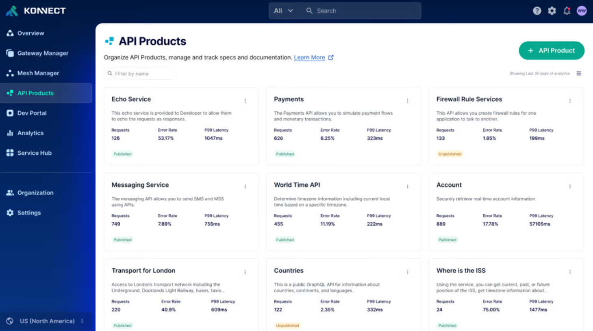 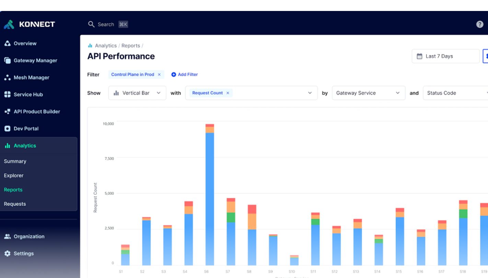
Service Description
Based on Kong solution, it is a platform of tools and services that facilitates the management, control, monitoring, and protection of APIs (Application Programming Interfaces) without having to manually implement all the components. The service typically offers:
- API gateways to route and secure traffic;
- Authentication and authorization: Rate limiting and throttling to control consumption;
- Logging and observability: Integration with security and DevOps systems.
The API manager facilitates API lifecycle management, including aspects such as creation, version management, deprecation, and retirement, to ensure backward compatibility, allowing developers to gradually migrate to new versions without disrupting existing applications.
The API manager allows you to define and enforce policies, such as usage limits, quota management, custom authentication, data transformations, and caching. These policies allow you to control API behavior and ensure compliance with security requirements and guidelines.
The API Manager can integrate with other systems and tools, such as identity and access management (IAM) systems, performance monitoring systems, data analytics systems, and security gateways. This integration expands the API Manager's functionality and integrates it into the ecosystem of existing applications and services.
The service is offered for a unit size of 500 M of API requests.
Features and Advantages
The following table summarizes the main features of the service:
| FEATURE | DESCRIPTION |
|---|---|
| API publishing | Provides tools for publishing and exposing APIs to developers and authorized consumers. Supports comprehensive API documentation, including available endpoints, request parameters, authentication requirements, and response formats to facilitate adoption and integration. |
| Access control | Manages authentication and authorization for API consumers, enabling fine-grained control over access permissions. Supports security mechanisms such as API keys, access tokens, and digital certificates to protect API resources. |
| Monitoring and analytics | Delivers visibility into API usage and performance through metrics such as request volumes, response times, and error rates. Enables administrators and developers to monitor service health, identify performance bottlenecks, and support capacity planning and optimization activities. |
The architecture is divided into several key components that interact to provide comprehensive functionality to users:
| COMPONENT | DESCRIPTION |
|---|---|
| Front-end | Administration interfaces and graphical portals (Admin GUI and Developer Portal) accessible through web browsers or dedicated applications. These interfaces enable service configuration, user management, and real-time monitoring of operational metrics. |
| Back-end Kong control plane | Centralized management layer responsible for API configurations, policies, plugins, routing rules, and service orchestration across the platform. |
| Back-end data plane | Processes and routes API traffic to backend services while enforcing security policies, request transformations, caching mechanisms, and rate-limiting controls. |
| Database | Stores configurations, users, roles, operational statistics, and logs. Supports replication and high-availability capabilities to ensure resilience, fault tolerance, and business continuity. |
| Integrations | Supports integration with development tools, CI/CD pipelines, monitoring platforms, and project management systems, enabling seamless adoption within enterprise workflows. |
| Security and authentication | Provides advanced security capabilities, including Multi-Factor Authentication (MFA), support for OIDC, SAML, and LDAP protocols, and granular access control mechanisms to ensure data protection and regulatory compliance. |
The service offers the following advantages:
| ADVANTAGE | DESCRIPTION |
|---|---|
| Reduced time to market | APIs can be published, secured, and managed rapidly without the need to build and maintain the underlying infrastructure from scratch. |
| Flexibility and scalability | The platform adapts to evolving business requirements, supporting traffic growth, peak workloads, and new integrations without service disruption. |
| Reduced operating costs | Eliminates investments in hardware, infrastructure maintenance, and platform operations by delegating management responsibilities to the PaaS provider. |
| API monetization | Enables API-driven business models by exposing APIs to partners, customers, or third parties through subscription plans, usage-based pricing, or other monetization strategies. |
| Enhanced security and compliance | Protects APIs and service communications through authentication, authorization, traffic control, and rate-limiting policies, supporting compliance and reducing security risks. |
| Open ecosystem | Facilitates innovation, interoperability, and collaboration through a standardized, API-first architecture that simplifies integration with partners and external services. |
Functions as a Service (FAAS)

Service Description
FaaS (Function as a Service) is an event-driven system design model running on stateless containers based on the Nuvolaris platform, where developers create, deploy, and execute small, independent functions to accomplish specific tasks without having to worry about the underlying infrastructure.
Adopting FaaS allows for standardization of application development and execution by centralizing cross-functional capabilities such as orchestration, automatic provisioning, monitoring, integrated service management, and event-driven flow control.
It offers tools to:
- centrally manage serverless functions;
- automate component lifecycle management.
The FaaS platform provisions and scales the underlying resources based on demand. It is ideal for highly dynamic scenarios with variable workloads and integrates seamlessly with microservices and event-based architectures.
The service is offered with the following metrics: 100 VCPUs.
Features and Advantages
The service goes beyond simply providing an execution engine; it also offers a complete ecosystem, consisting of:
- Serverless execution → stateless functions and event-driven workflows, scalable and available in various programming languages.
- Portability and independence → can run on any Kubernetes cluster, across multiple environments, without lock-in constraints.
- Security and compliance → data protection and centralized access management.
- The solution enables organizations to adopt a modern and flexible model, reducing operational complexity and benefiting from a standardized and easily accessible service.
The service is delivered through Apache OpenServerless, an open-source, cloud-agnostic serverless platform based on Apache OpenWhisk as a Function-as-a-Service (FaaS) engine.
The service offers the following advantages:
| ADVANTAGE | DESCRIPTION |
|---|---|
| Reduced operating costs | Adopts a pay-per-use model, allowing organizations to pay only for the actual execution of functions and consumed resources. |
| Flexibility and scalability | Automatically scales resources according to workload demand, ensuring optimal performance without manual intervention. |
| Operational efficiency | Eliminates the need to manage servers, operating systems, patches, and infrastructure updates, reducing operational overhead. |
| High availability | Built-in redundancy and fault-tolerance mechanisms ensure continuous service availability, even in the event of infrastructure failures. |
| Accelerated time-to-market | Enables rapid deployment of new features and services without the complexity of infrastructure provisioning and management. |
| Agile development | Allows development teams to focus on application code and business logic rather than server administration and platform maintenance. |
| Continuous innovation | Facilitates rapid experimentation, prototyping, and deployment of new services with minimal upfront investment and reduced risk. |
| Competitive advantage | Improves organizational agility, reduces operational costs, and accelerates service delivery compared to traditional hosting and infrastructure models. |
Infra & Ops Platform Family
Below is the list of services belonging to the Infra & Ops Platform family:
IT infrastructure Service Operations (Logging & Monitoring)

Service Description
Developed by Leonardo, this is an Application Performance Monitoring (APM) service that monitors and controls infrastructure performance supporting applications (e.g., latency, errors, service availability) and workloads deployed in the Cloud environment.
It provides centralized collection and analysis across various infrastructure elements: Servers and VMs, Containers and orchestrators, Cloud providers, and Network.
The service is offered per 1 GB of data storage.
Features and Advantages
The Log & Audit service built on OpenTelemetry provides a unified and vendor-neutral way to collect, process, and export observability data.
| FEATURE | DESCRIPTION |
|---|---|
| Log collection and aggregation | Captures application logs, system logs, and security-relevant audit events. Supports structured logging to ensure consistent, searchable, and machine-readable data across environments. |
| Audit trail generation | Records user activities, configuration changes, and security-sensitive operations, ensuring traceability, integrity, and compliance through standardized data collection and export mechanisms. |
| Distributed tracing | Provides end-to-end visibility across distributed applications and microservices, enabling correlation of logs, metrics, and traces for comprehensive observability and auditability. |
| Metrics and performance data | Collects infrastructure and application metrics, including CPU, memory, network utilization, and API latency, supporting performance monitoring and operational diagnostics. |
| Policy-driven data processing | Enables filtering, sampling, redaction, and enrichment of telemetry data through OpenTelemetry Collectors, ensuring compliance with security and data governance requirements. |
| Multi-destination export | Exports logs, metrics, and traces to SIEM platforms, analytics solutions, data lakes, and object storage systems. Supports integrations with Elasticsearch, Splunk, Loki, BigQuery, and other observability platforms. |
The following table summarizes the components of the service:
| COMPONENT | DESCRIPTION |
|---|---|
| Instrumentation layer | Applications and services instrumented through OpenTelemetry SDKs and auto-instrumentation agents. Generates logs, metrics, and traces using the standardized OpenTelemetry Protocol (OTLP) format. |
| OpenTelemetry collector | Central component responsible for receiving, processing, enriching, and exporting telemetry data. Can be deployed as a Kubernetes sidecar, a DaemonSet on each node, or a centralized collector cluster. |
| Export and storage layer | Stores and distributes observability and security data to multiple destinations, including Elasticsearch, Loki, cloud logging platforms, SIEM solutions such as Splunk and Microsoft Sentinel, and object storage repositories for long-term retention. |
| Visualization and analytics | Provides dashboards and visualization tools, such as Grafana, enabling real-time monitoring, operational analytics, and troubleshooting activities. |
| Audit and compliance capabilities | Supports centralized log analysis, auditing, digital forensics, and compliance reporting through consolidated access to telemetry and security-related information. |
The service offers the following advantages:
| ADVANTAGE | DESCRIPTION |
|---|---|
| Improved security and compliance | Centralized audit trails and telemetry collection simplify compliance with regulatory and security frameworks such as ISO 27001, SOC 2, and GDPR, while providing enhanced visibility into user activities and critical events. |
| Reduced vendor lock-in | OpenTelemetry's vendor-neutral architecture enables organizations to change observability backends without requiring application re-instrumentation. |
| Better decision-making | Unified observability data provides actionable insights into application usage, performance trends, and customer experience, supporting data-driven business and operational decisions. |
| Cost optimization | Policy-based sampling, filtering, and data routing help reduce storage, processing, and licensing costs while enabling the use of cost-efficient storage tiers. |
| Unified observability pipeline | A single, standardized pipeline for logs, metrics, and traces simplifies operations, reduces tool sprawl, and improves data consistency. |
| Improved troubleshooting | Correlation of logs, metrics, and traces accelerates root-cause analysis and significantly reduces Mean Time to Repair (MTTR). |
| Scalability and flexibility | OpenTelemetry Collectors can be scaled horizontally to support high-volume telemetry workloads across multi-cloud and hybrid environments. |
| Standardization across teams | Developers, SREs, operations, and security teams share a common telemetry standard, improving collaboration, onboarding, and operational efficiency. |
| Extensibility | Modular and pluggable components enable integration with new tools, platforms, and workflows without redesigning the observability architecture. |
DevSecOps Family
Below is the list of services belonging to the DevSecOps family:
DevSecOps As A Service

Service Description
The service, based on Gitlab, offers an integrated environment for the complete management of the software development lifecycle according to the DevSecOps approach and practices, providing the tools needed for collaboration, development, testing, security, and software release in a single integrated environment.
The service aims to support organizations in introducing application development, release, and management processes characterized by automation, security, and compliance, thus promoting the creation of reliable digital solutions aligned with required quality standards.
It allows you to manage projects and repositories, control source code versions, automate CI/CD pipelines, and collaborate efficiently with development teams.
The service is offered per user unit in the following options: 100 Users Ultimate/500 Users premium/2000 Free.
Features and Advantages
The following table summarizes the key features of the service:
| FEATURE | DESCRIPTION |
|---|---|
| Git repositories | Centralized source code repositories that support version control, change tracking, and collaboration across development teams. |
| CI/CD pipeline | Automated build, test, and deployment workflows that accelerate software delivery, improve consistency, and reduce manual intervention. |
| Security integration (DevSecOps) | Embedded security controls, including SAST, SCA, container image scanning, and infrastructure security checks, enabling early vulnerability detection and remediation. |
| Artifact and container management | Centralized storage and management of build artifacts and container images, supporting secure promotion and deployment across development, testing, and production environments. |
| Monitoring and governance | Dashboards and reporting capabilities that provide visibility into project status, code quality, and security posture, with role-based access controls and identity management integration. |
The following table summarizes the components of the service:
| COMPONENT | DESCRIPTION |
|---|---|
| GitLab core platform | Central platform providing the web interface, APIs, database services, and collaboration capabilities required to manage the software development lifecycle. |
| Git repository | Repository management service that enables source code versioning, change tracking, branching, and collaborative development workflows. |
| CI/CD engine (GitLab Runner) | Execution engine responsible for running CI/CD pipeline jobs, automating build, test, validation, and deployment processes. |
| Artifact registry | Centralized repository for storing and managing build artifacts, software packages, container images, and libraries generated throughout the CI/CD lifecycle. |
| Test management | Integrated testing component that supports the planning, execution, and monitoring of test activities, helping ensure software quality and release readiness. |
The service offers the following advantages:
| ADVANTAGE | DESCRIPTION |
|---|---|
| Reduced time to market | Accelerates software delivery through automation, integrated CI/CD pipelines, and streamlined development workflows. |
| Reduced operating costs | Consolidates source code management, CI/CD, security, and collaboration capabilities into a single platform, reducing tooling and maintenance overhead. |
| Increased team productivity | Improves efficiency through centralized collaboration, process automation, and integrated development workflows. |
| High return on investment (ROI) | Reduces rework, operational inefficiencies, and post-release remediation costs, maximizing the value of software development investments. |
| Increased stakeholder trust | Enhances software quality, security, and release reliability, fostering confidence among customers, partners, and internal stakeholders. |
| Native security integration | Embeds DevSecOps capabilities directly into the development lifecycle, supporting compliance with corporate policies and regulatory requirements. |
| Integrated project management | Provides native project management capabilities, including issue tracking, boards, milestones, and planning tools, improving project visibility and coordination. |
| Centralized development lifecycle management | Unifies source code repositories, CI/CD pipelines, testing, and artifact management within a single platform. |
| Enhanced cross-team collaboration | Facilitates collaboration between development, operations, security, and project management teams through shared workflows and visibility. |
| Process automation | Automates repetitive development, testing, security, and deployment activities, increasing consistency and operational efficiency. |
Qualizer DevSecOps
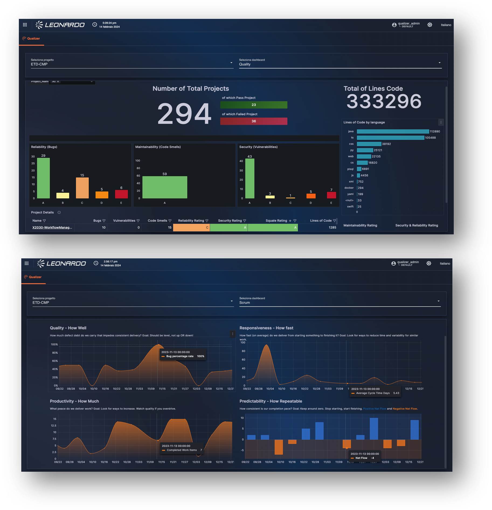
Service Description
The Leonardo's Qualizer service is a platform designed to meet the needs for visibility, control, and continuous improvement of the software lifecycle throughout the development cycle, in accordance with the DevSecOps and Agile approach.
It offers a centralized tool for analyzing, observability, and governance of software quality.
The service allows you to aggregate data from various sources, security, monitoring, and testing tools, integrating them into a user dashboard (portal) that clearly and graphically displays various interactive metrics and insights.
The service is sized and offered per project unit. Each unit consists of 10 projects.
Features and Advantages
The service offers the following key features:
| FEATURE | DESCRIPTION |
|---|---|
| Ingestion | Automatically collects data from software development and delivery tools, including source code repositories, CI/CD platforms, and security and quality analysis solutions. The collected information is consolidated and prepared for further analysis. |
| Data processing | Normalizes, correlates, and enriches collected data, extracting key metrics and transforming information into a structured format suitable for reporting and analytics. |
| Project management | Provides project configuration and organization capabilities, enabling the association of products, pipelines, tools, and contextual information within a unified management framework. |
| Analytics engine | Aggregates and analyzes collected data to generate insights into development performance, code quality, security posture, testing activities, and delivery efficiency. |
| Presentation layer | Delivers dashboards and reporting capabilities that provide continuous visibility into key performance indicators, trends, and operational metrics. |
The Qualizer service is cloud-native and based on a containerized microservices system. This architecture allows Qualizer to be flexible, resilient and secure, with the ability to adapt to different technological scenarios.
At a logical level, the architecture is divided into the following main components:
| COMPONENT | DESCRIPTION |
|---|---|
| Core modules | Service capabilities such as ingestion, project management, and data processing are implemented as independent microservices running on Kubernetes/OpenShift, ensuring scalability, high availability, and functional isolation. |
| Data repository | Centralized database used to store, normalize, and manage information collected from external systems, supporting efficient metric calculation, reporting, and dashboard generation. |
| REST API integration | Standard API layer that enables continuous integration with external platforms, facilitating automated data collection and interoperability across the software delivery ecosystem. |
| Messaging broker | Kafka-based messaging infrastructure that decouples service components, supports high-volume event processing, and enables horizontal scalability and resilient communication between modules. |
The service offers the following advantages:
| ADVANTAGE | DESCRIPTION |
|---|---|
| Reduced time to market | Accelerates software delivery through automation, integrated pipelines, and streamlined development workflows. |
| Reduced operating costs | Consolidates multiple development, quality, and security capabilities into a single platform, reducing tooling complexity and operational overhead. |
| Increased team productivity | Enhances collaboration between development, operations, and security teams, aligning objectives, improving visibility, and reducing coordination efforts. |
| High return on investment (ROI) | Minimizes rework, technical debt, and post-release remediation activities, maximizing the value of software development investments. |
| Increased stakeholder trust | Improves software quality and security posture, enabling more reliable releases and increasing confidence among customers and stakeholders. |
| Centralized security management | Aggregates, normalizes, and tracks vulnerabilities identified by multiple security tools within a single platform, simplifying governance and reducing the risk of overlooked issues. |
| Reduced remediation time | Provides immediate visibility into vulnerabilities and security findings, accelerating issue prioritization, ownership, and resolution processes. |
| Continuous improvement through metrics | Delivers standardized dashboards and performance indicators that enable objective measurement of team efficiency, software quality, and delivery performance. |
| Unified visibility and governance | Provides a single dashboard for monitoring quality, security, and deployment metrics, supporting informed decision-making and operational governance. |
Big Data Family
Below is the list of services belonging to the Big Data family:
Data Lake
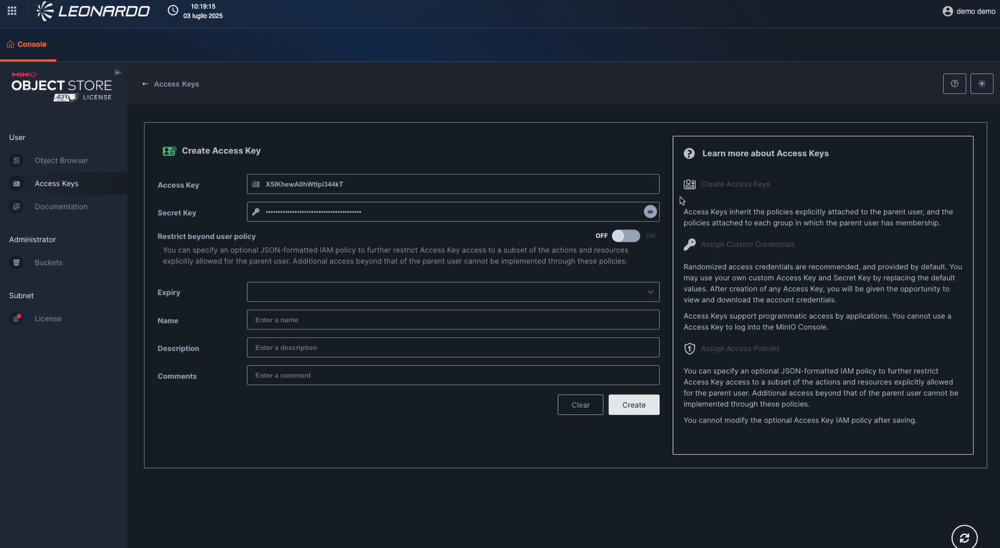
Service Description
Developed by Leonardo, it provides a ready-to-use platform that has all the features developers, data scientists, and analysts need to easily archive data of all sizes, shapes, and velocities.
It allows for the ingestion of a wide range of heterogeneous data sources (structured, semi-structured, and unstructured), from various internal and external sources within the organizations (relational databases, files, web applications, cloud, web services, etc.), and of various classification types.
It integrates with the Processing/ETL module for accessing data and metadata for the necessary processing or normalization, and with the Data Governance module for managing data access and managing data security and protection.
The service is sized and offered per storage unit. Each unit contains 1 TB.
Features and Advantages
Data Lake is the foundation for all Big Data services; without it, other services cannot be activated.
It was designed based on, and with full wire-protocol compatibility with, Amazon's renowned cloud storage product (Simple Storage Service). This enables the scalability needed to manage data volumes in the petabyte range (and beyond) typical of the Big Data world, while ensuring maximum interoperability and compatibility with languages, libraries, and products compatible with the S3 protocol.
Data Lake's capabilities are based on a horizontally scalable infrastructure, capable of supporting heavy read and write loads, ensuring consistent performance even in scenarios characterized by large amounts of data and intensive throughput.
The development technology is based on MinIO, an object storage solution fully compatible with the S3 protocol.
The application layer is built on distributed object storage, which in turn relies on an underlying block storage layer, which can be implemented either bare metal or using software-defined solutions. The overall architecture is based on containers orchestrated by a resource manager based on an enterprise-class Kubernetes distribution.
The service offers the following advantages:
| ADVANTAGE | DESCRIPTION |
|---|---|
| Compliance and governance | Supports auditing, versioning, encryption (AES-256), and integration with identity and access management systems, helping organizations meet security and regulatory requirements. |
| Flexibility and scalability | Supports horizontal scaling and accommodates rapidly growing datasets, making it suitable for large-scale and multi-petabyte storage environments. |
| Rapid time to market | Enables the rapid deployment of new analytics workloads, data pipelines, and data-driven applications without the complexity of managing the underlying infrastructure. |
| Simplified management | Eliminates the need to manage clusters, load balancers, replication mechanisms, and monitoring platforms, while providing built-in monitoring and alerting capabilities. |
| Reduced operating costs | Leverages open standards and S3-compatible technologies to reduce licensing and infrastructure costs compared to proprietary storage solutions. |
| High availability and resilience | Integrated replication and erasure coding mechanisms ensure data durability, fault tolerance, and business continuity. |
| Optimized performance | Delivers high throughput and low latency for object storage workloads, supporting real-time analytics, AI, and machine learning use cases. |
| Interoperability | S3 API compatibility and multi-protocol support simplify integration with existing applications, platforms, and data ecosystems. |
| Automation and DevOps friendliness | Supports automated operations, continuous updates, and simplified backup management, enabling efficient DevOps and platform engineering practices. |
Disaster Recovery (DR) architecture
Data replication within MinIO Object Storage is managed directly at the application level.
The solution provides Site Replication capabilities that enable native management of data distributed across multiple Data Centers (DCs), synchronizing buckets, objects, access policies, and encryption configurations.
Typically, data availability and resilience in distributed object storage systems are achieved through deployment across multiple physical locations. In this architecture, MinIO clusters are deployed in geographically separate data centers to provide disaster recovery capabilities.
Replication between MinIO sites can be configured as follows:
| REPLICATION MODE | DESCRIPTION |
|---|---|
| Synchronous replication | Used within the same Region for High Availability (HA) configurations. |
| Asynchronous replication | Used between different Regions for Disaster Recovery (DR) configurations. |
In this deployment, thanks to the high-bandwidth and low-latency connections available between data centers, synchronous Site Replication has been adopted between clusters, ensuring data consistency across locations.
Access to the different clusters can be achieved either through direct addressing or through a load balancer, depending on architectural and operational needs.
From an internal management perspective, MinIO automatically organizes storage units into erasure sets, logical groups that form the foundation of system availability and resilience.
To ensure uniform distribution, MinIO applies a striping mechanism for erasure sets across the various nodes in the pool, avoiding load concentrations or single points of failure.
Objects are then divided into data blocks and parity blocks, which are distributed within the erasure sets to ensure redundancy, fault tolerance, and operational continuity.
Data Platform Services
The Data Platform offering provides a modular platform for the governance, processing, and value extraction of Big Data assets stored within the enterprise Data Lake.
Designed to support data-driven organizations, the platform enables the governance, transformation, and consumption of large volumes of structured and unstructured data, ensuring quality, traceability, security, and control throughout the entire information lifecycle.
The Data Platform integrates with the Data Lake, which serves as the data collection and persistence layer, by providing the capabilities required for metadata management, data governance, batch and real-time processing, and data preparation for analytics, operational, and artificial intelligence use cases.
The platform is delivered as a set of complementary managed PaaS services that address both data governance and data processing requirements, enabling organizations to transform their data assets into trusted, governed, and actionable information.
| COMPONENT | DESCRIPTION |
|---|---|
| Data governance service | Provides data cataloging, metadata management, data lineage, data quality controls, and governance capabilities to ensure compliance, discoverability, and effective management of enterprise data assets. |
| PaaS ETL – Batch/Real-Time processing service | Provides scalable data ingestion, transformation, enrichment, and processing capabilities for both batch and streaming workloads, enabling data preparation for analytics, reporting, artificial intelligence, and business applications. |
Together, these services provide a comprehensive framework for governing, processing, and maximizing the value of enterprise data assets, ensuring that data stored within the Data Lake can be securely managed, efficiently consumed, and used to support business and analytical workloads.
The following sections provide a detailed description of each service, outlining their features, capabilities, and benefits within the Data Platform ecosystem.
PaaS ETL - Batch/Real time Processing
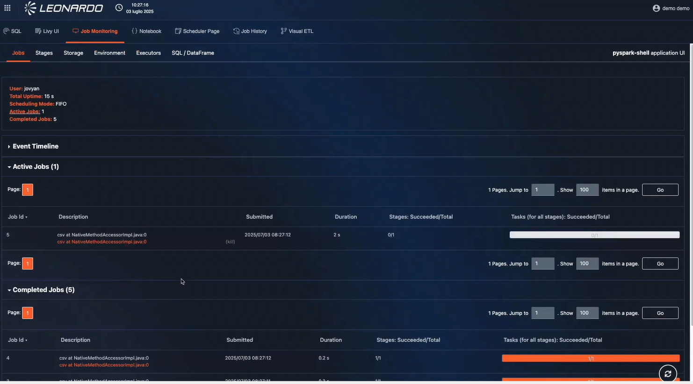 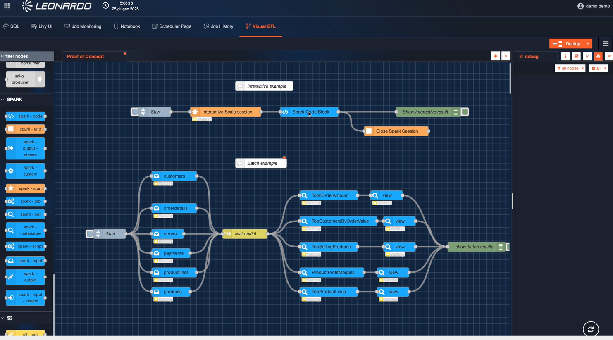
Service Description
The ETL - Batch/Real time Processingt is a platform that provides a set of tools for processing, integrating, quality-checking, and preparing data from heterogeneous sources stored in the Data Lake, both in real time and in batch mode.
It offers a user-friendly graphical interface for designing and implementing data integration workflows using a visual approach, following the ETL (Extract – Transform – Load) approach. This reduces the complexity of data integration and allows users to focus on business logic rather than programming code.
It supports a wide range of data sources, including relational databases, files, web applications, cloud, web services, and more. This makes it extremely flexible for data integration in a variety of contexts.
It also offers data quality management tools, allowing users to clean, standardize, and enrich their data to ensure its accuracy and reliability.
The service is sized and offered per worker node. Each worker consists of 16vCPU and 128 GB of RAM.
Features and Advantages
The following table summarizes the main features of the service:
| ADVANTAGE | DESCRIPTION |
|---|---|
| Heterogeneous and large-scale data processing | Supports a wide range of data sources and formats in both batch and streaming modes, including HDFS, S3, ADLS Gen2, GCS, relational databases, NoSQL platforms, Apache Kafka, and common formats such as CSV, Parquet, and Avro. |
| Native integration with the Big Data platform | Seamlessly integrates with the Data Lake and Batch/Real-Time Processing services, enabling the creation of end-to-end data processing and analytics workflows. |
| Advanced data pipeline implementation | Enables the development of complex data processing pipelines by leveraging the parallel and distributed computing capabilities of Apache Spark clusters. |
| Interactive data exploration and debugging | Provides interactive execution environments that simplify data exploration, pipeline validation, troubleshooting, and development activities. |
| Maximum scalability | Delivers the scalability required to support organizations of any size, from small-scale workloads to large enterprise data processing environments. |
The main architectural components of the service are as follows:
| COMPONENT | DESCRIPTION |
|---|---|
| Visual ETL architecture | Visual development environment that enables the design and orchestration of ETL, ELT, and ELL pipelines through reusable components. Supports data ingestion, transformation, and delivery across multiple sources and integrates with Data Lake, Monitoring, and Processing services. |
| Apache Spark | Distributed open-source processing engine that provides high-performance, in-memory computation capabilities for large-scale data processing, analytics, and transformation workloads. |
| JupyterLab | Interactive notebook-based development environment for data analysis, scientific computing, and machine learning. Supports multiple programming languages, including Python, R, and Julia. |
| Node-RED | Low-code visual programming environment that enables rapid development of data flows and integrations between devices, APIs, web services, and enterprise systems. |
The service offers the following advantages:
| ADVANTAGE | DESCRIPTION |
|---|---|
| Support for data-driven strategies | Enables faster and more informed decision-making through centralized access to data, supporting use cases such as real-time analytics, IoT, e-commerce, customer insights, and business intelligence. |
| Greater focus on core business | Allows development and IT teams to focus on business value and innovation by offloading platform maintenance and operational management activities. |
| Reduced operating costs and service scalability | Eliminates infrastructure management overhead while supporting large-scale batch processing and real-time streaming workloads. Automated extraction, transformation, and loading processes improve efficiency and scalability. |
| Integration with cloud ecosystem | Seamlessly integrates with Data Lakes, Data Warehouses, Business Intelligence platforms, and AI/ML services, enabling end-to-end data workflows. |
| Guaranteed security and compliance | Provides security controls such as encryption, access management, and audit logging to support governance, regulatory compliance, and data protection requirements. |
| Integrated monitoring | Delivers centralized monitoring, logging, metrics, and alerting capabilities for continuous visibility into data pipelines and processing activities. |
Data Governance
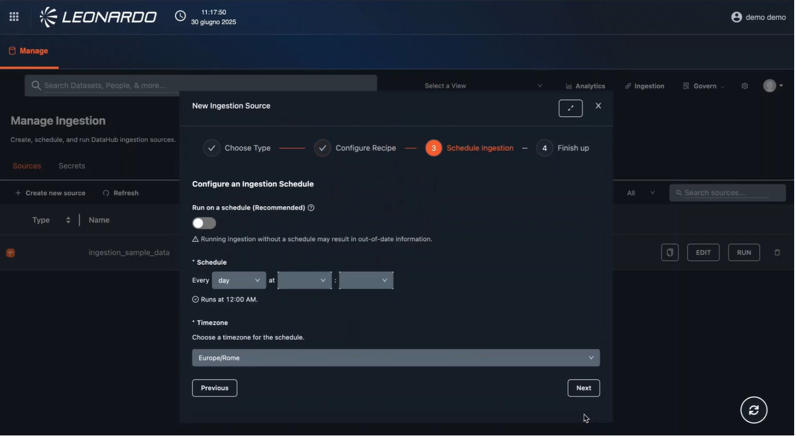 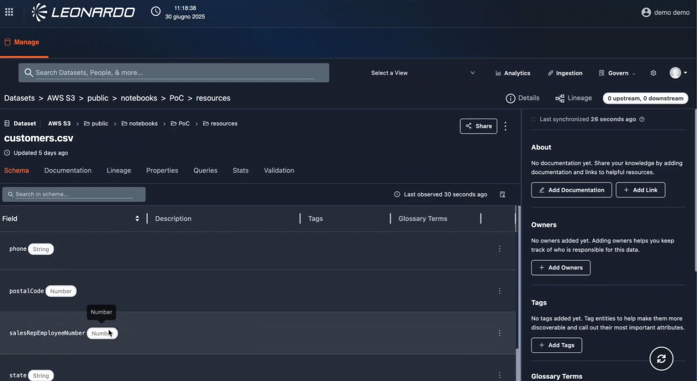
Service Description
A service developed by Leonardo, the Data Governance service provides a secure and centralized platform for managing, governing, and discovering enterprise data assets.
Through advanced search, discovery, and metadata extraction capabilities, the platform automatically collects, organizes, enriches, and correlates metadata from multiple data sources, simplifying data access, analysis, and governance activities.
The service supports data lineage tracking, data quality monitoring, and compliance management, helping organizations ensure data accuracy, consistency, reliability, and adherence to regulatory requirements.
It also provides capabilities for the detection and classification of personal and sensitive data, enabling stronger data protection, simplified auditing processes, and improved control over data sharing and usage across the organization.
The service is sized and offered each 10 users.
Features and Advantages
The service offers the following features:
| FEATURE | DESCRIPTION |
|---|---|
| Data search and discovery | Automatically explores datasets and metadata across the Data Lake, enabling users to discover, understand, and leverage available data assets more effectively. |
| Data and metadata catalog | Collects, organizes, and enriches metadata to create a centralized catalog that improves data discoverability, accessibility, and governance. |
| Data lineage | Provides end-to-end visibility into data flows and transformations, tracking the complete lifecycle of data from source systems to consumption layers. |
| Access control and auditing | Enables granular access management and comprehensive auditing capabilities, providing full traceability of data access and usage activities. |
The service uses a tool of Data Hub that extends the concept of a data catalog by offering data discovery, data observability, and data governance functions.
The service offers the following advantages:
| FEATURE | DESCRIPTION |
|---|---|
| Data search and discovery | Automatically discovers and explores datasets and metadata across the Data Lake, improving data visibility, accessibility, and reuse. |
| Data and metadata catalog | Collects, organizes, and enriches metadata to create a centralized catalog that enhances data discoverability, governance, and self-service access. |
| Data lineage | Provides end-to-end traceability of data flows and transformations, enabling visibility into the complete lifecycle of data from source to consumption. |
| Access control and auditing | Delivers granular access management and comprehensive auditing capabilities, ensuring traceability of data access, usage, and governance activities. |
Business Intelligence

Service Description
Developed by Leonardo with Grafana technology, the Business Intelligence Service is a platform with an analytics environment designed to provide real-time, interactive data visualization and monitoring capabilities.
It centralizes data ingestion, transformation, storage, and dashboarding within a scalable service that eliminates the need for organizations to maintain on-premises analytics infrastructure.
Built on the Grafana visualization engine, the platform empowers users to explore metrics, logs, and business KPIs through intuitive dashboards while integrating seamlessly with diverse data sources across cloud and hybrid ecosystems.
The service is sized and offered per user unit. Each unit consists of 100 users.
Features and Advantages
The following table summarizes the key features of the service:
| FEATURE | DESCRIPTION |
|---|---|
| Unified data visualization | Provides dynamic and customizable dashboards that consolidate operational, financial, and business performance data from multiple sources into a single view. |
| Multi-source connectors | Supports native integration with SQL databases, time-series platforms, cloud storage services, IoT systems, and third-party analytics solutions. |
| Real-time monitoring | Enables continuous monitoring of business and operational metrics through live dashboards, alerting mechanisms, and automated notifications. |
| Role-based Access Control (RBAC) | Provides granular access management to dashboards, datasets, and administrative functions based on user roles and permissions. |
| Advanced querying and exploration | Offers powerful data exploration capabilities with support for SQL, PromQL, InfluxQL, and other engine-specific query languages. |
| Alerts and anomaly detection | Delivers rule-based alerting, threshold monitoring, and anomaly detection capabilities to identify operational issues and performance deviations. |
| White-labeling and custom branding | Allows organizations to customize dashboards, reports, and portal interfaces with their own branding and visual identity. |
| API and automation support | Enables integration with external platforms through APIs, webhooks, and automation workflows to support orchestration and operational efficiency. |
The following table summarizes the components of the service:
| COMPONENT | DESCRIPTION |
|---|---|
| Visualization layer | Dashboard engine responsible for rendering interactive charts, tables, reports, alerts, and analytical views for business and operational insights. |
| Data source integration layer | Collection of connectors and plugins that enable integration with databases, cloud platforms, streaming services, log repositories, and monitoring systems. |
| Data processing pipeline | Optional ETL/ELT layer used to collect, transform, enrich, and aggregate raw data before visualization and analysis. |
| Time-series and analytical storage | Storage layer optimized for real-time and historical analytics, supporting platforms such as Prometheus, Loki, InfluxDB, Elasticsearch, and SQL-based data warehouses. |
| User and access management | Centralized identity and access management capabilities with support for SSO, LDAP, OAuth 2.0, and enterprise IAM integrations. |
| Alerting and notification engine | Event-driven framework that generates alerts and notifications through channels such as email, Microsoft Teams, Slack, PagerDuty, or SMS based on configurable conditions and thresholds. |
| Management and administration console | Centralized web interface used to configure data sources, manage users and tenants, provision resources, and monitor platform health and usage. |
| API gateway | Provides programmatic access to platform capabilities, enabling dashboard provisioning, data export, alert management, and embedded analytics integrations. |
The service offers the following advantages:
| ADVANTAGE | DESCRIPTION |
|---|---|
| Faster and better decision-making | Provides real-time or near-real-time access to business data through interactive dashboards and drill-down capabilities, enabling informed and timely decisions. |
| Increased productivity and faster insights | Self-service dashboards, automated reporting, and simplified data sharing accelerate access to information and improve operational efficiency. |
| Reduced total cost of ownership (TCO) | Managed infrastructure and cloud-native delivery reduce the need for on-premises resources, lowering operational and maintenance costs. |
| Enhanced collaboration and data-driven culture | Shared dashboards, integrated collaboration capabilities, and intuitive user experiences encourage data adoption across technical and business teams. |
| Anywhere, anytime access | Cloud-based access, mobile support, and remote connectivity enable users to consume and analyze data from any location and device. |
| Extensive data integration | Supports a wide range of on-premises and cloud data sources, enabling consolidation and analysis of heterogeneous datasets. |
| Efficient data preparation and modeling | Integrated capabilities for data transformation, modeling, and advanced calculations simplify the creation of analytical datasets and reports. |
| Interactive self-service analytics | Intuitive interfaces, drag-and-drop functionality, and pre-built templates enable business users to independently create dashboards and reports. |
| Security, governance, and compliance | Built-in security controls, auditing capabilities, and access management mechanisms help protect data and support regulatory compliance requirements. |
| Scalability and flexibility | Cloud-native architecture enables the platform to scale according to business demand while maintaining performance and operational efficiency. |
Event Message
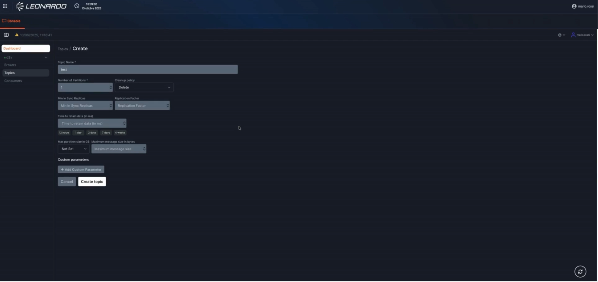
Service Description
It provides a platform developed by Leonardo using Kafka technology for developing real-time applications and data pipelines and acts as a message broker, providing publish-subscribe functionality.
It increases the scalability and resilience of existing applications by decoupling architectural components using a reactive approach based on asynchronous interactions.
The platform can scale horizontally and provide ordered message delivery capabilities. Like other Big Data PaaS modules, the solution is based on containerized resources orchestrated via Kubernetes.
It enables near-real-time analytical processes through streaming and facilitates the implementation of IoT use cases.
The service is sized and offered per worker node. Each worker consists of 16 vCPU and 128 GB of RAM.
Features and Advantages
The service offers the following main features:
| FEATURE | DESCRIPTION |
|---|---|
| Reliable data exchange | Useful tool for implementing reliable data exchange between different components. |
| Messaging workload partitioning | Ability to partition messaging workloads as application requirements change. |
| Real-time streaming | Provides real-time streaming capabilities for data processing. |
| Native message replay | Native support for data and message replay. |
| Batch and stream processing integration | Integration with the Batch/Stream Processing module. |
| Web-based monitoring interface | Web interface for monitoring Brokers, Topics, Messages, Consumers, and ACLs. |
The following table summarizes the components of the service:
| COMPONENT | DESCRIPTION |
|---|---|
| Apache Kafka-based solution | Distributed publish-subscribe messaging platform designed for real-time data streaming, event-driven architectures, scalable data pipelines, and replayable data processing workloads. |
| Broker-based architecture | Cluster of Kafka brokers responsible for receiving, storing, replicating, and distributing messages across the platform, ensuring scalability and fault tolerance. |
| Topics | Logical channels used to organize and categorize data streams, enabling producers and consumers to exchange messages through a common abstraction. |
| Partitions | Ordered and distributed subdivisions of a topic that enable parallel processing, scalability, and high-throughput message consumption. |
| Persistence | Durable storage mechanism that retains messages within the Kafka cluster according to configurable retention policies, enabling replay and recovery capabilities. |
| Producers | Applications or services responsible for publishing messages to specific topics and partitions within the Kafka platform. |
| Consumers | Applications, services, or processing engines that subscribe to topics and consume messages for analysis, processing, or integration purposes. |
The service offers the following advantages:
| ADVANTAGE | DESCRIPTION |
|---|---|
| Faster time-to-market | Accelerates the integration of new applications and services through event-driven architectures, enabling faster delivery of products and business capabilities. |
| Greater agility | Supports the development of modular, loosely coupled, and scalable services, reducing the impact of changes on existing systems. |
| Reduced operational risk | Built-in monitoring, redundancy, backup mechanisms, and service-level guarantees help minimize downtime and reduce the risk of data loss. |
| Faster and more informed decision-making | Enables real-time data processing and analytics to support use cases such as IoT, digital services, e-commerce, and operational intelligence. |
| Predictable costs | Managed service delivery reduces infrastructure management overhead and helps avoid over-provisioning and unexpected maintenance expenses. |
| Scalability | Supports high-volume event streams and large-scale workloads while maintaining consistent performance and throughput. |
| High availability and fault tolerance | Distributed architecture and replication mechanisms ensure service continuity and resilience in the event of failures. |
| Simplified management | Eliminates the need to manage clusters, software updates, patching activities, and complex platform configurations. |
| Optimized performance and low latency | Advanced capabilities such as message batching, compression, and automated topic management improve throughput and reduce processing latency. |
| Security and compliance | Provides integrated authentication, authorization, encryption in transit and at rest, and governance controls to support security and regulatory requirements. |
Artificial Intelligence (AI) Family
Below is the list of services belonging to the Artificial Intelligence (AI) family:
AI Platform services
The AI Platform offering provides a modular and scalable environment designed to enable organizations to adopt, manage, and operationalize AI capabilities across a wide range of business and operational use cases.
Built on a cloud-native architecture, the platform provides a set of complementary managed PaaS services that support the development, deployment, and consumption of AI-powered applications while ensuring security, governance, and operational efficiency.
The AI Platform is designed to accelerate the adoption of Generative AI and intelligent automation technologies, enabling organizations to leverage their data and knowledge assets through advanced search, language models, and AI-enabled tools.
The offering is composed of the following services:
| SERVICE | DESCRIPTION |
|---|---|
| AI search service | Provides intelligent search and knowledge retrieval capabilities, enabling users and applications to discover, access, and interact with information distributed across enterprise data sources through semantic search and Retrieval-Augmented Generation (RAG) techniques. |
| AI SLM service | Provides access to Small Language Models (SLMs) optimized for enterprise use cases, delivering efficient, secure, and cost-effective natural language processing capabilities for inference, conversational AI, content generation, and domain-specific applications. |
The following sections provide a detailed description of each service, outlining their features, capabilities, and benefits within the AI Platform ecosystem.
AI Search - RAG Service
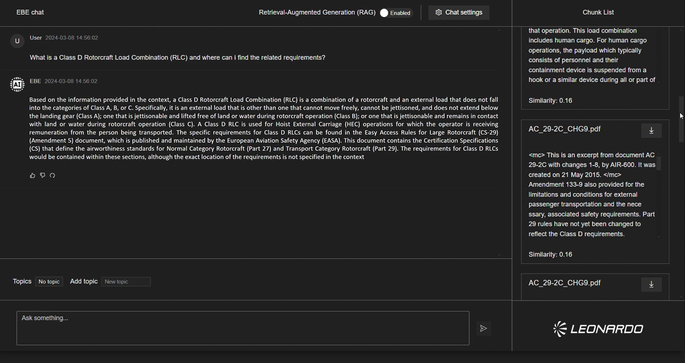
Service Description
AI Search-RAG is a system developed by Leonardo for automatically generating answers to user-generated questions using context and information from reliable data sources.
It can be integrated into environments requiring a virtual assistant capable of responding using reliable, contextualized information.
The system generates answers by first searching for relevant information or passages from a reliable external knowledge base using AGENTIC RAG (Retrieval-Augmented Generation) techniques.
This service allows for better contextualization of the search, further improving the quality and accuracy of the generated answers compared to traditional text-based RAGs.
AI Search allows individuals and organizations to quickly access relevant, contextualized information through a simple and intuitive graphical interface built on a chat model, improving efficiency and productivity through advanced intelligent search tools.
The service is sized per GPU unit. Each unit consists of one partition of an NVIDIA H200 GPU.
Features and Advantages
The service offers the following key features:
| FEATURE | DESCRIPTION |
|---|---|
| Big Data PaaS Data Lake integration | Leverages the Big Data PaaS Data Lake service to meet object storage requirements and provide a scalable foundation for enterprise knowledge retrieval. |
| Optimized language models and embeddings | Uses optimized Large Language Models (LLMs) and embedding models to provide relevant responses tailored to specific business contexts and user needs. |
| User authentication | Integrates with existing security protocols to ensure controlled and secure access to AI Search capabilities and indexed knowledge sources. |
| Natural language understanding | Understands user queries expressed in natural language and provides coherent answers by retrieving relevant multimodal information from text and audio sources. |
| Multilingual model support | Supports multilingual models to enable search, retrieval, and interaction across different languages and knowledge domains. |
| Feedback collection | Collects user feedback after query resolution to support continuous improvement of search relevance and answer quality. |
| User-based document segmentation | Enables document segmentation by user to support access control, personalization, and context-aware knowledge retrieval. |
The following table summarizes the components of the service:
| COMPONENT | DESCRIPTION |
|---|---|
| Model Repository | At a minimum, a virtual assistant and an embedding model are required. |
| Vector Database and Search Engine | It uses a vector database that stores vector representations (embeddings) of the input data, allowing documents and information to be retrieved based on their meaning (semantic search). It also uses a traditional search engine (lexical search) that operates on text and metadata, performing searches based on keywords and structured criteria (e.g., BM25, TF-IDF). |
| Document Manager | Responsible for retrieving documentation from a specific repository and indexing it in the vector database for use in user queries. |
AI Search is composed of three layers:
| LAYER | DESCRIPTION |
|---|---|
| Data layer | Represents the database and the primary source of information. |
| Analysis layer | Responsible for all processing, analysis, and generation of answers to user queries. It includes the Retriever and the Generator, responsible for retrieving the most relevant information and creating coherent and personalized responses, respectively. |
| User layer | Interface through which the user interacts directly with the service, offering the ability to query the knowledge base, view answers with referenced sources, manage documents, and provide feedback. |
The service offers the following advantages:
| ADVANTAGE | DESCRIPTION |
|---|---|
| Access to up-to-date knowledge | Answers are always based on the most recent internal and external documents. |
| Reduced operational costs | Less time is spent on manual searches and repetitive support activities. |
| Improved customer/employee experience | Provides relevant, clear, and personalized answers tailored to user needs. |
| Increased competitiveness | Leverages proprietary organizational knowledge in addition to publicly available information. |
| Risk mitigation | Reduces errors and hallucinations, increasing the relevance and accuracy of responses. |
| Upgradability without retraining | Knowledge can be updated by simply refreshing the document repository or database without retraining the underlying language model. |
| Hybrid vector search | Combines semantic search with traditional text-based search techniques to improve retrieval effectiveness. |
| Model efficiency | An LLM-based orchestration model oversees activities and decisions while coordinating simpler specialized models or agents. |
| Traceability and transparency | Enables the display of cited sources used to generate responses, improving trust and explainability. |
| Bias reduction | By leveraging vector database indexing, the orchestration model receives context that is relevant to the user’s query, improving response quality and reducing bias. |
AI SLM service
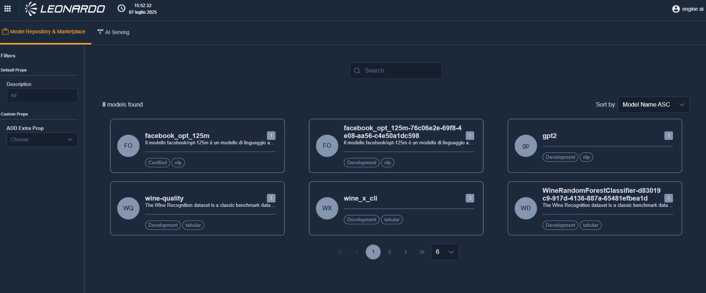 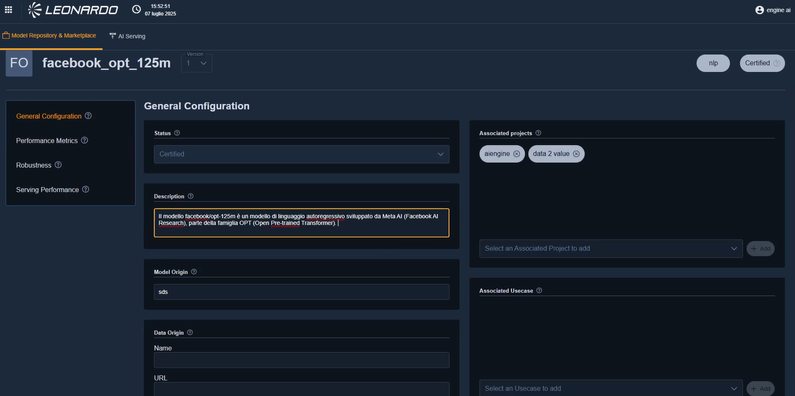
Services Description
The AI SLM Service is a Generative AI Platform-as-a-Service (PaaS) developed by Leonardo that provides optimized natural language processing and inference capabilities through the use of Small Language Models (SLMs).
Designed for enterprise and public administration environments, the service enables organizations to integrate Generative AI capabilities into their applications and business processes while maintaining control over resource consumption, performance, and operational costs.
SLMs are lightweight and efficient language models optimized for domain-specific use cases, offering fast and accurate responses for targeted natural language tasks such as text classification, content generation, summarization, information extraction, conversational assistants, and workflow automation.
The service is particularly suitable for organizations seeking to deploy AI-powered applications without the complexity and computational requirements typically associated with larger language models.
The service is sized per GPU unit; each AI SLM Service unit consists of one partition of an NVIDIA H200 GPU.
Features and Advantages
The service offers the following main features:
| FEATURE | DESCRIPTION |
|---|---|
| Tenant isolation | Each customer is provided with a dedicated tenant within the customer infrastructure, ensuring complete isolation of data, configurations, and deployed models. |
| Resource allocation | Dedicated infrastructure resources (CPU, GPU, RAM, and Storage) are assigned to each tenant and sized according to workload requirements. |
| Auto-scaling | Tenant resources can automatically scale in response to workload variations, ensuring service continuity and performance optimization. |
| Cloud-native deployment | The service is deployed within the customer tenant in cloud-native mode on the OpenShift platform, ensuring portability, resilience, and standardized operational procedures. |
| Centralized observability | Provides centralized monitoring capabilities, including log collection, metrics, and alerting, enabling complete observability, auditing, and advanced troubleshooting. |
| PaaS integration | Leverages platform services for storage, networking, security, and identity management, ensuring compliance with project requirements while benefiting from shared infrastructure services. |
The service features a modular architecture designed to ensure scalability, workload segregation, and seamless integration into enterprise and public administration processes.
| COMPONENT | DESCRIPTION |
|---|---|
| API Layer | Provides access to SLM capabilities through REST APIs for integration with existing systems or through a web-based user interface for direct interaction. |
| Inference Layer | The core component of the service, where Small Language Models are deployed and executed. |
| Inference Engine | Executes language models optimized for low latency, resource efficiency, and predictable performance. |
| Model Pool Management | Maintains a catalog of validated and pre-configured SLMs that can be selected according to specific business requirements. Only one model is active per tenant at any given time. |
| Platform Layer | Provides cross-functional platform services supporting the operation and management of the service. |
| Resource Management & Scaling | Provides dynamic allocation of computational resources (CPU, GPU, RAM, and storage), load-based auto-scaling, and service lifecycle management. |
The service offers the following advantages:
| ADVANTAGE | DESCRIPTION |
|---|---|
| Technological accessibility | Enables access to Generative AI capabilities through intuitive interfaces and simplified integration mechanisms. |
| Reduced operational costs | Eliminates the need for investments in dedicated AI infrastructure and complex model management activities. |
| Faster time-to-market | Accelerates the adoption of AI-powered solutions through pre-configured and validated language models. |
| Operational efficiency | Automates repetitive tasks, reducing processing times and improving service quality. |
| Specialized AI capabilities | Provides lightweight and domain-focused language models optimized for specific business and operational use cases. |
| Risk mitigation | Leverages validated and pre-trained models without requiring advanced machine learning expertise. |
| Easy integration with existing systems | Supports integration through APIs, microservices, and enterprise workflows. |
| Resource efficiency | Optimized infrastructure utilization enables predictable costs and efficient consumption of computational resources. |
| Fast and simplified model testing | Ready-to-use models can be evaluated through integrated playground capabilities available directly from the service interface. |
| Rapid prototyping and AI DevOps | Provides a ready-to-use environment for developing, testing, and deploying AI-powered applications through standard interfaces and deployment workflows. |
Database Family
Below is the list of services belonging to the Database family:
PaaS SQL - PostgreSQL

Service Description
The PaaS SQL – PostgreSQL is a cloud-based managed platform that provides ready-to-use PostgreSQL database instances without requiring the user to install, configure, or maintain the underlying infrastructure.
In essence, it delivers PostgreSQL “as a service”, allowing developers and organizations to focus on application development and data management instead of database administration.
PostgreSQL in a highly available configuration is a reliable solution for organizations seeking an open source database with performance, security, and scalability. This service is ideal for applications that require reliability without the costs of commercial database solutions.
The service could be used to:
- Host and manage relational databases in the cloud.
- Store and query structured data efficiently.
- Support applications that need high availability, scalability, and data integrity.
- Simplify DevOps workflows by automating database management tasks.
- Integrate easily with other cloud services (analytics, AI, APIs, etc.).
The service is offered per DB instance. Each instance with replication consists of 4 vCPUs and 16 GB of RAM.
Features and Advantages
The service offers the following key features:
| FEATURE | DESCRIPTION |
|---|---|
| Fully managed service | Simplifies provisioning, configuration, patching, and upgrade activities. |
| Scalability | Supports vertical and horizontal scaling of compute and storage resources according to workload requirements. |
| High availability and reliability | Provides built-in replication, automatic failover, and multi-zone deployment options. |
| Backup and recovery | Includes automated backups, point-in-time restore capabilities, and disaster recovery mechanisms. |
| Security and compliance | Supports data encryption in transit and at rest, identity and access management (IAM), network isolation (VPC/Private Link), and compliance with standards such as GDPR, ISO, and SOC. |
| Performance optimization | Provides query optimization, connection pooling, caching mechanisms, and performance monitoring tools. |
| Monitoring and alerting | Integrates with monitoring dashboards and metrics for CPU, memory, I/O, and query performance analysis. |
| Integration and extensibility | Compatible with PostgreSQL extensions (e.g., PostGIS, pg_partman, pg_stat_statements) and provides API and CLI tools for management and automation. |
The following table summarizes the components of the service:
| COMPONENT | DESCRIPTION |
|---|---|
| Control Plane | It is the part of the service that manages the lifecycle and orchestration of database instances. It is composed of API, provisioning, configuration, and monitoring capabilities. |
| Data Plane | It is the layer where PostgreSQL instances actually run. Each instance can be isolated in a VM, container, or pod, depending on the implementation. |
| HA & Resilience | Ensures that the service remains available even in the event of hardware or software failures. It implements replication, failover, and backup policies. |
| Security Layer | Ensures data protection and access control in accordance with security and compliance requirements. It includes authentication, authorization, encryption, firewalls, and auditing capabilities. |
| Observability Layer | Provides visibility and continuous management of the service through monitoring and operational capabilities such as metrics collection, logging, and automated patching. |
The service offers the following advantages:
| ADVANTAGE | DESCRIPTION |
|---|---|
| Cost efficiency | No hardware or infrastructure investment is required. Operational costs are reduced as there is no need for dedicated DBA teams to manually manage maintenance, patching, or scaling activities. |
| Faster time-to-market | Database instances can be provisioned quickly through a web interface or API. Ideal for rapid development, prototyping, and product launches, reducing dependency on infrastructure provisioning cycles. |
| Business agility and scalability | Supports elastic scaling of CPU, RAM, and storage resources without downtime. Easily adapts to changing workloads and seasonal demand while enabling cloud-native and microservices-based architectures. |
| Increased reliability and availability | High Availability (HA), automated failover, replication, and backup mechanisms help ensure service continuity, protect against data loss, and reduce downtime risks. |
| Focus on core business | Allows organizations to focus on application development and innovation rather than database administration, reducing management overhead and operational complexity. |
| Compliance and risk reduction | Security, patching, and compliance activities are managed by the service provider, reducing the risk of configuration errors, vulnerabilities, and non-compliance issues. |
| Standardization and portability | Based on open-source PostgreSQL, ensuring compatibility and avoiding vendor lock-in. Databases can be easily exported or migrated to other PostgreSQL environments and support extensions such as PostGIS, JSONB, and logical replication. |
PaaS In Memory- Redis

{kind=link}
{kind=link}
{kind=link}
{kind=link}
{kind=link}
{kind=link}
{kind=link}
{kind=link}
{kind=link}
{kind=link}
{kind=link}
{kind=link}
Service Description
It is a PaaS DB based on Redis technology (Remote Dictionary Server) that exposes a high-performance in-memory database, primarily used as a cache and database for web and real-time applications.
Redis is a widely used database due to its flexibility and ability to handle a wide range of data types with low latency.
The service delivers sub-millisecond data access, advanced caching, session management, message streaming, and data persistence capabilities.
As a Platform-as-a-Service (PaaS) offering, it abstracts away the operational complexity of managing Redis clusters — including provisioning, scaling, patching, failover, and monitoring — while ensuring enterprise-grade reliability, security, and performance.
The PaaS Redis service is designed for applications that require extremely fast data access, real-time analytics, and low-latency transactions.
Typical use cases include:
- Application caching to reduce latency and offload backend databases.
- Session storage for web and mobile applications.
- Real-time analytics and leaderboards (e.g., gaming, ad tech, telemetry).
- Message queues and event streaming for distributed systems.
- Geospatial data processing and time-series data handling.
- Rate limiting and token management in API gateways.
The service is offered per DB instance. Each instance consists of 4 vCPUs and 16 GB of RAM.
Features and Advantages
The following table summarizes the key features of the service:
| FEATURE | DESCRIPTION |
|---|---|
| In-memory | Data is stored in RAM, ensuring extremely fast access. |
| Persistence | Supports data persistence on disk, preventing data loss in the event of a system reboot. |
| Data types | Supports a variety of data types, allowing the modeling of different kinds of information. |
| Pub/Sub | Supports the publish/subscribe model for real-time communication between applications. |
| Fully managed platform | Manages provisioning, patching, scaling, and maintenance activities. Provides high-availability clusters with zero-downtime updates, self-healing orchestration, and management through API, CLI, or Web Console. |
| High performance and low latency | Stores the entire dataset in memory for sub-millisecond access. Optimized for real-time operations requiring microsecond response times and supports high throughput with optional persistent storage. |
| Flexible data structures | Supports strings, hashes, lists, sets, sorted sets, bitmaps, HyperLogLogs, streams, and geospatial indexes. Suitable for counters, queues, caching, and pub/sub messaging. |
| High availability and disaster recovery | Provides Redis Sentinel or Cluster Mode for automatic failover and fault tolerance. Supports multi-AZ deployments, backup and restore capabilities, and optional geo-replication across regions. |
| Persistence options | Supports RDB (Redis Database Backup), AOF (Append-Only File), and hybrid persistence modes to balance performance, durability, and recovery requirements. |
| Scalability and elasticity | Supports horizontal scaling through Redis Cluster sharding and vertical scaling through dynamic resource allocation. Includes automatic data rebalancing across nodes. |
| Security and compliance | Provides encryption in transit (TLS) and at rest, RBAC, user authentication, IAM integration, auditing, logging, and compliance monitoring. |
| Monitoring and observability | Offers real-time metrics on throughput, latency, and memory utilization, with alerting, anomaly detection, and integration with Prometheus, Grafana, and ELK. |
| Developer integration and APIs | Compatible with standard Redis clients and libraries. Supports REST and gRPC APIs, CI/CD integrations, Infrastructure-as-Code tools, and Redis modules such as RedisJSON, RediSearch, RedisGraph, and RedisTimeSeries. |
The logical architecture of the PaaS Redis service consists of multiple layers designed for automation, scalability, and resilience.
| COMPONENT | DESCRIPTION |
|---|---|
| Control plane | Responsible for service orchestration, cluster provisioning, scaling, and lifecycle management. Manages authentication, authorization, metering, and billing. Provides APIs, CLI, and web-based UI for service management. |
| Data plane (Redis cluster layer) | Core component that hosts user data in memory. Composed of multiple Redis instances organized as master nodes and replica nodes. Implements sharding for horizontal scalability and ensures high throughput and low latency for data operations. |
| Storage and persistence layer | Provides optional durable storage for backup and disaster recovery. Utilizes RDB snapshots and AOF logs stored on encrypted block or object storage. Supports automated retention policies and scheduled backups. |
| Networking and security layer | Provides virtual network isolation using VPC/VNet configurations. Supports TLS-based encryption for client-to-server and inter-node communication, security groups, IP whitelisting, firewall rules, and optional private endpoints for secure integration with internal systems. |
| Monitoring and management layer | Aggregates telemetry and performance metrics. Implements logging, tracing, and alerting through monitoring systems and provides dashboards for capacity planning and SLA tracking. |
| High availability and failover layer | Monitors node health and automatically triggers failover in case of node or zone failures. Uses Redis Sentinel or internal control mechanisms for cluster coordination and supports synchronous or asynchronous replication for HA and DR scenarios. |
The service offers the following advantages:
| ADVANTAGE | DESCRIPTION |
|---|---|
| Reduced total cost of ownership (TCO) | No capital investment in hardware, software, or cluster management. Reduces operational overhead by automating deployment, scaling, and maintenance activities while eliminating the need for specialized in-house Redis administration skills. |
| Faster time-to-market | Instant provisioning of Redis clusters enables rapid development and testing. Ready-to-use configurations optimize caching and real-time processing use cases, allowing teams to integrate low-latency data layers into applications within minutes. |
| Improved application performance and user experience | Sub-millisecond response times improve customer satisfaction and engagement. Reduces load on backend databases and APIs through caching and data offloading while ensuring consistent performance during traffic spikes and seasonal demand peaks. |
| Business agility and scalability | Easily scales up or down to accommodate fluctuating workloads. Enables dynamic adaptation to new business requirements and supports real-time analytics and streaming workloads without architectural redesign. |
| Reliability and continuity | Built-in replication and failover mechanisms ensure continuous availability. Automated backups and geo-redundancy support disaster recovery requirements and enterprise-grade service continuity. |
| Compliance and security | Provider-managed encryption, patching, and access control help ensure compliance with security standards. Role-based access controls, network isolation, auditing, and governance capabilities protect sensitive data and reduce compliance risks. |
| Focus on core business innovation | Frees development and operations teams from infrastructure and cluster management activities, allowing organizations to focus on product innovation, business value creation, and user experience improvements. |
Networking Family
Below is the list of services belonging to the Networking family:
PaaS DNS (Domain Name System)
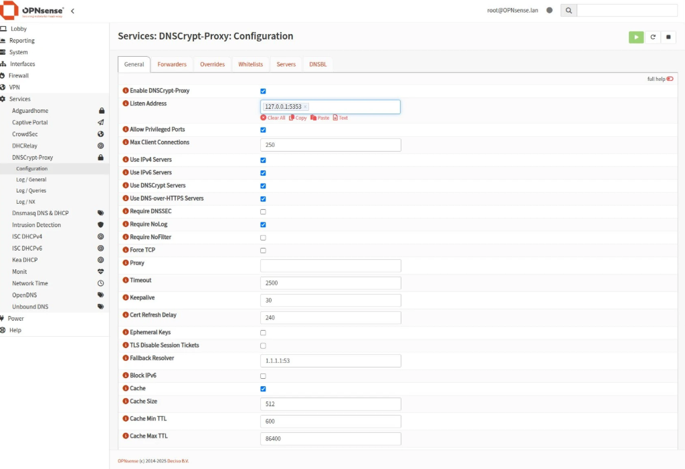
{kind=link}
Service Description
The PaaS DNS service is a fully managed, cloud-native solution that provides internal and external Domain Name System (DNS) resolution within the customer’s Virtual Network (VNET).
It is designed for high availability, automated scalability, and integrated security, enabling seamless management of DNS names for dynamic workloads.
| FEATURE | DESCRIPTION |
|---|---|
| Self-contained DNS resolver | Based on OPNsense, acting as the authoritative DNS point for the VNET. |
| Internal name resolution | Provides name resolution for virtual machines, containers, and cloud services within the environment. |
| Secure DNS forwarding | Forwards DNS queries to external resolvers with DNSSEC support to ensure integrity and security of DNS responses. |
| Automated provisioning | Covers instance deployment, zone configuration, and dynamic record management. Fully compatible with DevOps pipelines through REST APIs. |
| Automated security patching and updates | Security patches and updates are applied automatically without user intervention, ensuring protection against known vulnerabilities. |
The service also supports protocol-level traffic handling, primarily DNS over TCP and UDP, with underlying network infrastructure supporting ICMP for connectivity diagnostics.
Features and Advantages
The following table summarizes the key features of the service:
| FEATURE | DESCRIPTION |
|---|---|
| Cloud-managed OPNsense firewall instances | Fully managed virtual appliances with automated updates, monitoring, and lifecycle management. |
| Zero-trust network access | Policy-based access management for users and devices, enabling secure remote connectivity. |
| High availability and scalability | Supports cluster configurations, automated failover, and elastic capacity provisioning. |
| Centralized configuration and orchestration | Provides a unified control panel for managing rules, VPNs, routing, and monitoring across multiple nodes. |
| Multi-tenant architecture | Enables logical separation of environments for partners, business units, or customers. |
| Full API integration | Supports REST APIs for automation, CI/CD pipelines, and Infrastructure-as-Code workflows. |
The following table summarizes the components of the service:
| COMPONENT | DESCRIPTION |
|---|---|
| OPNsense core platform | The foundational DNS and security engine, providing routing, filtering, and advanced security modules. |
| Management and orchestration layer | Cloud-native platform that automates provisioning, configuration, monitoring, and scaling of OPNsense nodes. |
The service offers the following advantages:
| ADVANTAGE | DESCRIPTION |
|---|---|
| Reduced operational complexity | Eliminates the need to manage firewall hardware, updates, and maintenance in-house. |
| Lower total cost of ownership (TCO) | Subscription-based model removes CAPEX requirements and ensures predictable cost planning. |
| Accelerated time-to-value | Rapid deployment and standardized configurations shorten rollout cycles and speed up service adoption. |
| Improved security posture | Centralized policy enforcement and continuous updates reduce exposure to threats and security vulnerabilities. |
| Flexibility for business growth | Enables the rapid addition of new sites, users, or workloads without requiring network re-architecture. |
| Consistent and automated configuration | Reduces human error and ensures uniform security policies and configurations across the organization. |
| API-first approach | Supports seamless integration with DevOps pipelines and automated deployment systems. |
| Vendor-neutral and open-source based | Avoids vendor lock-in while benefiting from the transparency, flexibility, and extensibility of the OPNsense ecosystem. |
Deployment in customer VNET
The DNS service is deployed as a virtual appliance within the customer’s VNET.
It acts as the authoritative resolver for internal workloads while forwarding queries for external domains to upstream DNS servers. This ensures a single DNS endpoint for all workloads in the VNET, simplifying configuration and management.
Internal and external resolution
- Internal Resolution: the OPNsense DNS Resolver (Unbound) can be configured with local zones and host overrides. Workloads in the VNET can register their names dynamically, enabling seamless resolution of private IP addresses.
- External Resolution: queries for domains outside the VNET are forwarded to upstream DNS servers (e.g., ISP or public resolvers). Supports DNSSEC validation for secure external lookups.
Dynamic updates
The service supports dynamic DNS updates from workloads in the account, which can automatically register or update their DNS records in the OPNsense DNS Resolver.
This ensures that newly deployed or scaled workloads are immediately reachable by name without manual intervention.
Dynamic updates are authenticated using secure mechanisms (TSIG keys), preventing unauthorized changes.
Workload requests IP
│
▼
DHCP assigns lease
│
▼
RFC2136 DNS Update Request
(TSIG authenticated)
│
▼
Unbound DNS updates
A/AAAA records
│
▼
Clients resolve
updated hostname
{kind=link}
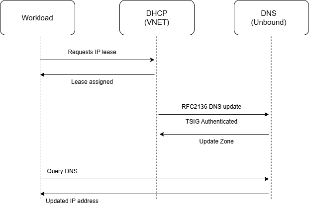
Cloud connected Service
Service Description
The PaaS Cloud interconnect gold SW service provides a high-quality, software-defined, private connectivity between a customer’s on-premises infrastructure (or external data centers) and the Aruba cloud environment.
It offers dedicated bandwidth tiers, enhanced SLA guarantees, secure routing, and enterprise-grade performance, enabling customers to build hybrid or multi-cloud architectures without deploying physical network appliances or managing complex routing setups.
The “Gold” tier represents the highest level of availability, performance, and support, while the “SW” component refers to software-based interconnect provisioning, ensuring flexibility, fast activation, and seamless scalability.
This service, delivered via hardware or software, is designed to simplify customer application migration with minimal impact on users and workloads.
It enables granularity down to the individual IP address during migration, increasing security and minimizing rollback times, if necessary.
The service is offered with the following unit metric: 10 Gbps of throughput.
Features and Advantages
The following table summarizes the key features of the service:
| FEATURE | DESCRIPTION |
|---|---|
| Private and secure network connectivity | Ensures a private, non-public connection between customer networks and cloud resources. Traffic does not traverse the public Internet, reducing risk and improving performance. Ideal for workloads requiring compliance, isolation, or predictable latency. |
| Software-defined provisioning (SDN) | Fully software-based interconnect setup with no physical circuits required. Supports on-demand provisioning through web console or API, rapid activation, and flexible reconfiguration without service interruption. |
| High SLA and guaranteed bandwidth (Gold tier) | Provides defined bandwidth tiers with guaranteed throughput. Includes enhanced SLAs for availability, packet loss, latency, and jitter, making it suitable for mission-critical enterprise applications. |
| Multi-site and multi-zone connectivity | Supports connectivity across multiple regions and availability zones, enabling redundant hybrid cloud architectures and interconnection of distributed workloads. |
| Routing integration | Supports both dynamic routing (BGP) and static routing. Automatically adapts to network topology changes and enables flexible hybrid cloud traffic engineering. |
| Segmentation and isolation | Allows the creation of multiple isolated virtual circuits or VLANs, enabling separation of production, staging, development, and partner environments. |
| End-to-end encryption | Supports traffic encryption at the network edge through IPsec or provider-managed encryption mechanisms, helping ensure compliance with data protection requirements. |
| Monitoring, logs, and telemetry | Provides real-time visibility into bandwidth usage, packet loss, latency, and connection health, with exportable logs for SIEM and analytics platforms. |
| No physical hardware required | The provider manages the entire connectivity layer, eliminating the need for physical circuits, routers, or carrier contracts, thereby reducing complexity and deployment time. |
The following table summarizes the components of the service:
| COMPONENT | DESCRIPTION |
|---|---|
| Software-defined interconnect fabric | Centralized SDN layer orchestrating virtual connections. Provides flexible, scalable, multi-tenant connectivity and allows rapid deployment and reconfiguration. |
| Regional interconnect gateways | High-availability routing gateways located in Aruba cloud regions. Serve as entry and exit points for private customer traffic and are architected for redundancy and failover. |
| Cloud backbone network | High-capacity fiber backbone interconnecting Aruba data centers. Ensures low-latency east-west traffic across regions and supports both primary and backup routes. |
| Security and isolation layer | Enforces strict tenant isolation at the network virtualization layer, routing control plane, and traffic segmentation policy level, ensuring no cross-tenant visibility. |
| Control plane | Manages interconnect provisioning, routing updates, bandwidth allocation, and policy enforcement. Exposed through both user interfaces and APIs. |
| Data plane | Handles the actual traffic flow with guaranteed QoS, deterministic routing, and optimized latency paths. Decoupled from monitoring and control functions. |
| Monitoring and observability layer | Aggregates telemetry from gateways and SDN controllers, providing dashboards, analytics, and alerting capabilities for performance and reliability monitoring. |
The service offers the following advantages:
| ADVANTAGE | DESCRIPTION |
|---|---|
| Enhanced security | Private connectivity avoids exposure to the public Internet and supports encrypted tunnels and isolated routing domains. |
| Predictable and high performance | Guaranteed bandwidth, low latency, and stable connectivity ensure consistent performance for enterprise workloads. |
| Rapid deployment | Software-defined provisioning reduces setup times from weeks to minutes, eliminating the need for physical circuits or carrier coordination. |
| High availability and reliability (Gold SLA) | Redundant gateways, network paths, and failover mechanisms are built in, making the service suitable for mission-critical connectivity requirements. |
| Cost efficiency | Eliminates the need for physical interconnects and traditional MPLS circuits, reducing infrastructure and operational costs. |
| Improved hybrid cloud architecture | Seamlessly integrates on-premises infrastructure with cloud workloads, supporting migration, disaster recovery, and inter-site communication scenarios. |
| Scalability on demand | Enables rapid adjustment of bandwidth tiers and addition of new interconnects to support growing or fluctuating workloads. |
| Simplified network operations | Centralized management through APIs and web portals, combined with automated routing and monitoring, reduces operational complexity. |
| Better compliance and data governance | Private regional connectivity helps support regulatory requirements while maintaining predictable control over data paths. |
| Optimized application experience | Reduced jitter and packet loss improve the performance of databases, real-time applications, VoIP/Unified Communications, and other latency-sensitive services. |